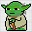
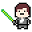

Integrantes
Aqui se encontra a lista dos integrantes que preencheram o nosso formulário. Ela tem o objetivo de facilitar a troca de conhecimento e a formação de equipes para projetos.
Dica: Utilize a ferramenta de procura do seu navegador (exemplo: Ctrl + F -> Python)
Grupo de Gestão: Identificados pelo achievement. "É membro da gestão."
Confira no final da página a nossa lista de achievements! Para requerir um achievement, mande e-mail para g-devufsc@outlook.com com o título "Requerimento de Achievement".
Bruno Oliveira
- Contato: bphilippinho@live.com
- Conhecimentos: Python
- Objetivos: Procuro projetos em python(ou q envolvam python)
- Experiência: Cursando ccna(redes e afins)
Patrick Clemer Alfarth
- Contato: patrick.c.alfa@gmail.com, (47) 99682-0354
- Conhecimentos: C++, Java, C#, Javascript, Lua, Unity, HTML5, Construct, Corona SDK
- Objetivos: Montar uma equipe para realizar projetos e desenvolver a experiência de todos.
- Experiência: Curso Técnico de Programação Integrado ao Ensino Médio (Java, SQL, PHP, Javascript), Curso de Unity (ProwayIT Training em Blumenau), 2 anos trabalhando desenvolvendo advergames ("jogos de propaganda")[http://labs.lunestudios.com/][https://www.youtube.com/user/EstudioLune/] e atualmente faço freelance com Unity
Cainã Correa Caldas
- Contato: cainacc@hotmail.com 48991733714
- Conhecimentos: Unity, C#, JavaScript, HTML, CSS, Java.
- Objetivos: Quero aprender Unity, C# e gestão. Além de conhecer o pessoal que curte game dev na UFSC.
- Experiência: Assisti um monte de videos de Unity e fiz uns exercícios. Quem quiser ver, tá em kkaldas.github.io/portfolio.html
Gabriel B. Sant'Anna
- Contato: baiocchi.gabriel@gmail.com
- Conhecimentos: C, Allegro, Unity Engine, Python
- Objetivos: Gostaria de aplicar o que já sei no desenvolvimento de jogos e aprender novas ferramentas no percurso.
- Experiência: Matéria de Programação em Linguagem C do IFSC tendo um jogo de plataforma 2D em Allegro como projeto final, Workshop Presencial de Desenvolvimento de Jogos 2D da Unity Brasil, Criação de scripts em Python para automatizar tarefas, Desenvolvimento de jogos em Unity como hobby, Página do IndieDB: http://www.indiedb.com/members/zkirmisher
Arthur Philippi
- Contato: apbiancofriber@gmail.com
- Conhecimentos: Blender, c++ e unreal. por enquanto ;)
- Objetivos: Aspiro aprender mais sobre as engines e me aprofundar mais em design
- Experiência: cursos da Udemy.
Arthur M. Pickcius
- Contato: https://www.facebook.com/arthur.pickcius
- Conhecimentos: Java , C, C#, C++, Unity Engine
- Objetivos: Estou interessado em aprender sobre modelagem e animação 3D.
- Experiência: Trabalhei usando C#, e fiz um jogo simples para celular usando unity.
https://github.com/gdevufsc/AquaDodger
Leonardo Cani Schumann
- Contato: leo_cani@hotmail.com, WhatsApp:11948267048
- Conhecimentos: Experiência em Unity, Flash e Photoshop
- Objetivos: Desejo adquirir mais experiência, aprender a usar outras ferramentas e engines e colocar várias idéias que estavam no papel para um jogo funcional
- Experiência: Já fiz faculdade de Design de Games pela Anhembi-Morumbi por 1 ano e Meio
Victor Schmitt
- Contato: schmittvictor2011@hotmail.com , whatsapp : (47) 98488 3475
- Conhecimentos: Unity, pixel art, c#
- Objetivos: Aprender mais sobre o desenvolvimento de jogos
- Experiência: Nenhuma experiencia
Renan Pinho Assi
- Contato: +5548991503086
- Conhecimentos: Javascript, Actionscript 2/3, Flash
- Objetivos: Aprender novas ferramentas como unity, aprender novas técnicas de programação para jogos. Compartilhar o que eu já sei
- Experiência: Já desenvolvi pequenos jogos mas não divulguei alguns e outros não mais são acessíveis
Robson Zagre Júnior
- Contato: r.zagre.jr@gmail.com, (32)998161302
- Conhecimentos: C#
- Objetivos: Procuro parcerias para desenvolvimento de Apps, games e sites
- Experiência: sim, mas não ha nenhum exemplo publicado
Arthur Tessaro
- Contato: arthurhtessaro@gmail.com, Whatsapp (49) 999807045
- Conhecimentos: Nenhuma, por enquanto
- Objetivos: Estudar o desenvolvimento de jogos desde o início
- Experiência: Não.
Matheus Amarante
- Contato: matheus041996@gmail.com (47)991175877
- Conhecimentos: Ilustração digital, design de personagens e cenários, concept arts.
- Objetivos: Aprimorar os conhecimentos em design e aplicá-los na prática de desenvolvimento de games.
- Experiência:
Mauro José Vieira Junior
- Contato: maurojosevieirajr@hotmail.com
- Conhecimentos: Unity Engine e C# (6 meses), Java (2 anos), C++, Unreal Engine (começando a aprender)
- Objetivos: Encontrar grupos de desenvolvimento com projetos para serem realizados em qualquer plataforma e linguagem. No momento não estou tocando nenhum projeto paralelo, logo estou desposto a ajudar quem eu puder, da maneira que eu puder
- Experiência: Segue o link do único projeto que fiz e coloquei no Github, é um RPG Tático feito no Unity 4.6 e foi utilizado como TCC para o curso de Programação de Jogos Digitais que fiz no Senai.
https://github.com/Terrato/Contestado-RPG
Vitor Duarte
- Contato: (11) 943193760
- Conhecimentos: Entre qs habilidades estão desenho de observação, conhecimentos em roteiro e teoria da cor.
- Objetivos: Aprender o máximo possível sobre a criação de jogos e o impacto desses nos seres humanos. Além de experiência em equipe, testar protótipos seria bom.
- Experiência: Posso mostrar um portfolio de desenho pessoalmente, se quiserem.
Gabriel da Silva Espíndola
- Contato: (48) 998669369
- Conhecimentos: JavaScript, illustrator
- Objetivos: Aprender mais sobre a área do desenvolvimento, pensando em seguir essa carreira no futuro.
- Experiência: Tive algumas aulas sobre JavaScript no meu curso técnico no IFSC, fiz uns trabalhos no Illustrator
Gabriel Pordeus Santos
- Contato: gabrielpordeus@gmail.com
- Conhecimentos: Me considero iniciante, mas já tive contato com Unity e Construct e, em linguagens, com C++, C#, Java, Javascript, HTML5, Python.
- Objetivos: Quero aprender a trabalhar em grupo, me aprofundar na parte de programação em jogos digitais e construir um portfolio.
- Experiência: Sou técnico em Programação de Jogos Digitais pelo IFPR.
Giulio Guilherme de Souza Simão
- Contato: cd_giulio@hotmail.com
- Conhecimentos: C, C++, Blender
- Objetivos: Aprender a utilizar melhor as ferramentas que conheço e quaisquer outras que sejam necessárias. Adquirir experiência prática em desenvolvimento de jogos.
- Experiência: Uso de C e C++ em trabalhos da faculdade.
João Vítor Venâncio
- Contato: Email: joaovitorvenancio99@outlook.com, WhatsApp: 48 991599906
- Conhecimentos: Java, Unity Engine (C#), HTML, CSS.
- Objetivos: Quero conhecer os futuros game devs de floripa. Além disso, aprender mais sobre desenvolvimento de jogos e ganhar mais experiência na área.
- Experiência: Já fiz 3 jogos bem (ênfase no bem) simples usando a Unity, mas não divulguei eles (são experimentos).
Gabriel Capeletti
- Contato: https://www.facebook.com/Capel4
- Conhecimentos: Unity, C#, C++, Java
- Objetivos: Estou no grupo com o intuito de ajudar o pessoal que está aprendendo.
- Experiência: Já trabalhei em 2 empresas de jogos(Catnigiri e Big Dog) e estou na terceira (Cafundó Estúdio Criativo) para dar uma olhada no que já fiz é só checar meu linkdn:https://www.linkedin.com/in/gabriel-capeletti-94418792/
Rafaela Bernardo Rodrigues
- Contato: (48)984139042
- Conhecimentos: Noção básica de Java e html
- Objetivos: Aprender sobre desenvolvimento de jogos usado a engine Unity
- Experiência: Não possuo experiência
Ricardo Felipe Nardi Fernandes Ribeiro
- Contato: (98) 98981142598
- Conhecimentos: Já mexi um pouco com Photoshop, Valve Hammer, ToonBoom (Animação) , The Games Factory.
- Objetivos: Gostaria de aprender sobre Modelagem 3D, criação de cenários e personagens (Character Artist / Environment Artist/ Concept Artist) , Animação. Além disso , gostaria de saber mais como é a construção de um jogo, design, aprender como a programação é usada no jogo e quais as linguagens importantes pra aprender. Gostaria de aprender também a desenvolver apps , pois tenho pouca experiência com esse trabalho, penso que no futuro gostaria de aprender mais sobre arte 3 mas queria ter uma visão mais completa sobre o processo de criação de jogos.
- Experiência: Ainda não fiz nada sério, quando era mais novo tentei fazer alguns jogos com o TheGamesFactory mas nada muito sério.
Murilo Batista de Almeida
- Contato: (42) 991174068
- Conhecimentos: Concept Art, Pixel Art, Arte para jogos 2D
- Objetivos: Estou interessado em refinar minhas habilidades como artista e designer de personagens, ambiente, objetos, etc... Gostaria também de aprender sobre animação para jogos 2D caso exista uma oportunidade
- Experiência: faco desenho e pintura para projetos particulares, não tenho experiencia profissional, mas estou revisando todo meu conhecimento de desenho para entrar no mercado como artista ao final desse processo.
tenho algumas peças prontas que estou disposto a mostrar via whatsapp ou email caso seja do seu interesse
Leonardo Gonçalves Gomes
- Contato: (34) 99976-6256
- Conhecimentos: C#(iniciante), C++(iniciante) , Modelagem 3D (básico), edição e criação de imagens
- Objetivos: Desejo aprender a criar jogos e ajudar em projetos como hobby
- Experiência: Apenas pequenos projetos pessoais, no geral, shoot'em up espaciais
Adônis Santin
- Contato: adonis.cs@bol.com.br - (48) 9-9158-8458
- Conhecimentos: Cientista Social formado, busco realizar pesquisa de campo em aldeias indígenas e criar Jogos de RPGs sobre estas múltiplas culturas brasileiras
- Objetivos: Desejo conhecer profissionais da área que possam auxiliar com este projeto pessoal
- Experiência: Possuo experiência como mestre e jogador de RPG D&D 3.5
Pedro Souza
- Contato: pedro.j.v.souza@gmail.com
- Conhecimentos: Java, C, C++.
Também um pouco de: Unity, Produção musical e C#.
- Objetivos: Criar jogos (qualquer plataforma), e melhorar na produção de musica.
- Experiência:
Fabrício Roepcke
- Contato: fabriciohzzr@gmail.com
- Conhecimentos: Unity Engine, Unreal Engine, 3ds Max (animação e modelagem), game design, level design (foco de estudos e aptidão).
- Objetivos: Criação de protótipos de jogos, desenvolver ideias, experiência de trabalho em equipe.
- Experiência: página pessoal: fabricioroepcke.com
experiência com criação 3d, game design e level design
Guilherme Escobar Martins
- Contato: 48984532843
- Conhecimentos: Eu sinceramente não tenho como responder essa pergunta, iniciei a pouco no curso de animação, sei um pouco de muito mas não sei muito de nada, porem acredito na possibilidade de somar no grupo igualmente compensando a falta de técnica em muita motivação e idéias.
- Objetivos: Meu interesse no grupo é me descobrir como profissional e crescer junto com pessoas que querem se desenvolver, gostaria de trabalhar em equipe e praticar o que eu irei aprender no curso de animação
Também tenho interesse de aprender um pouco de programação de jogos, principalmente focado em jogos 2D e de plataforma.
- Experiência: página pessoal: fabricioroepcke.com experiência com criação 3d, game design e level design
Ana Flávia Albano Soncini
- Contato: Whatsapp: (48) 98413-9716
- Conhecimentos: Ilustração Digital, Animação 2D (aprendendo), conhecimento em jogos
- Objetivos: Gostaria de ganhar experiência trabalhando em equipe, e também em desenvolvimento de arte para jogos que é uma das áreas que pretendo seguir.
- Experiência: Possuo um DeviantArt, mas este não é muito atualizado/contém só artes mais finalizadas em geral. https://wolfycatty.deviantart.com
João Pedro Wojcikiewicz
- Contato: Whatsapp: (48) 999-358-000
- Conhecimentos: C++, SFML, OpenGL, Python, Blender, Gimp
- Objetivos: Minhas habilidades se limitam por muito embasamento teórico mas pouca prática, gostaria de pô-las em prática e portanto desenvolver soluções reais.
- Experiência: Cursos online sobre as linguagens de programação, "fuceira" com Blender e várias pequenas manipulações com o Gimp.
Teo Haeser Gallarza
- Contato: teogallarza@gmail.com
- Conhecimentos: Java, C#, C++, C, Python, Unity 2D e 3D e animação 3D
- Objetivos: Procuro projetos para adquirir experiência e aprender novas ferramentas.
- Experiência: Já fiz games em Unity 2D e oficina de animação 3D
Anderson Hermann Notholt
- Contato: andersonkamael@gmail.com
- Conhecimentos: Game Maker 1, Unity Engine, C, C#
- Objetivos: Procuro aprender a utilizar as ferramentas Blender e unity. E aprender a entender a arte de pixel art.
- Experiência: Não fiz nenhum curso de unity e tenho o conhecimento básico das ferramentas. No Game maker eu participei de algumas game jams, mas consegui terminar apenas um jogo, mas ele foi desqualificado. Não tenho muita habilidade com desenho em pixel art mas me interesso bastante na arte. E no Blender eu gosto de fazer alguns objetos 3d Low Poly, mas apenas por diversão.
Gm48:
https://gm48.net/game/603/the-nameless-wizzard-tnw
Rodrigo Garcia
- Contato: (48) 99666-5356
- Conhecimentos: Unity Engine, C#, C++, C, Java, Allegro
- Objetivos: Testar protótipos, participar e criar grupos para projetos, compartilhar experiências
- Experiência: Breve participação na G2E, Desenvolvimento de jogos como hobby e ministramento de curso de jogos com Allegro e C
Paulo Eduardo Piceti Becker
- Contato: lopbecker@hotmail.com, Whatsapp: (55) 99931-4592, fb.com/paulo.eduardo.piceti.becker
- Conhecimentos: Tenho mais prática na parte de design de personagens, porém ainda preciso melhorar.
- Objetivos: Quero adquirir conhecimento no desenvolvimento de jogos e ajudar nos projetos como eu puder.
- Experiência:
Rebeca Acco
- Contato: rebeca.acco@gmail.com, (48) 99623-0461
- Conhecimentos: Animação 2D, Motion Graphics, Pintura Digital, Ilustração, Photoshop, Illustrator, Unity, After Effects.
- Objetivos: Gostaria de aprofundar meus conhecimentos nas engines tanto unity quanto Unreal, aprimorar minhas skills de tech-artist (artista que monta a arte na engine pros programadores usarem prontinho já), gostaria muito de participar de uma gamejam pra pegar XP em games seja qual for e me entrosar com o pessoal da comunidade que eu adoro. <3 Pretendo trabalhar com arte para games fora do país, então preciso de experiências no campo.
- Experiência: Trabalho com ilustração na área do entretenimento há alguns anos e em 2017 participei da produção de um indiegame cujo projeto não foi finalizado. Ele foi programado pra PC e seria sidescroller. Segue o link da arte e o que foi feito do projeto da minha parte:
https://www.behance.net/gallery/49961153/Game-Killer-Imps
Tive uma pequena experiência com a unity, pq eu precisei fazer toda a direção de arte, arte, design, personagens e ainda aprender alguma coisa de unity, então não consegui focar na engine como eu queria, além de não conseguir ver muito sobre isso com o grupo (o que acabou sendo o fator que acabou com a empresa, ngm conseguia se ver). Queria poder estar presente com as pessoas pra aprender por imersão, e não só ter que ver tutoriais sozinha (boring/não é empolgante nem motivador).
Trabalho atualmente como freelancer e fixa com ilustração, Design e motion graphics, mas meu coração está nos games e estou lutando pra achar um lugarzinho pra mim nesse meio.
Valeu!
ACHIEVEMENTS
- : Participa ou Já participou ativamente de um projeto.
- : É membro
da gestão. Participa de reuniões para organizar e planejar atividades para o G-Dev.
-  Jedi Master: Compromete-se a ajudar como puder seu padawan na jornada
do aprendizado do desenvolvimento de jogos digitais.
-  Padawan: Compromete-se a seguir as instruções do seu Jedi Master, a
fim de se dedicar ao aprendizado do game dev, de maneira salutar e de preferência divertida!
- Artista Colaborador: Disponibiliza-se a produzir gratuitamente material artístico sob pedido para games, dentro da própria disponibilidade.